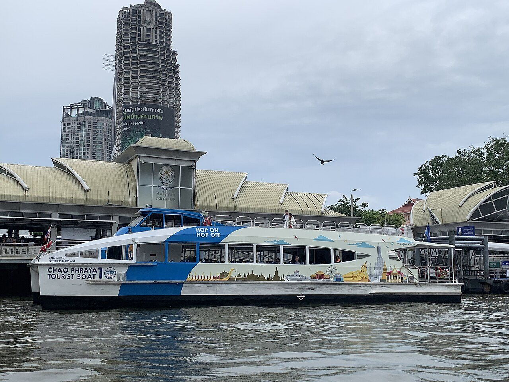

ทำไมต้องไปทางเรือ และต้องไปเช้า
พระบรมมหาราชวังอยู่ริมแม่น้ำฝั่งพระนคร ตรงข้ามกับฝั่งธนฯ ของเราเฉียง ๆ ขึ้นไปทางเหนือ ถนนรอบวังเป็นจุดที่รถติดที่สุดจุดหนึ่งของเกาะรัตนโกสินทร์ตอนสาย ขณะที่ทางน้ำวิ่งตรงจากท่าราชวงศ์ไปท่าช้างได้ในราว 20 นาทีไม่ว่าถนนจะเป็นยังไง ส่วนเรื่องเวลา วังเปิดตอนเช้าและปิดขายตั๋วช่วงบ่าย กรุ๊ปทัวร์มาถึงราว 09:30–10:00 และกลางวันแดดบนลานหินอ่อนแรงมาก ถ้าออกจากที่พักก่อน 07:45 คุณจะเดินเข้าประตูตอนเปิดพอดี ได้วัดพระแก้วช่วงที่ยังมีที่ยืนถ่ายรูป และออกมากินข้าวเที่ยงตอนที่คนอื่นเพิ่งเข้าแถวซื้อตั๋ว
เส้นทาง — จากท่าดินแดงถึงวัดพระแก้ว แล้วกลับก่อนเที่ยง
- 07:45 — ท่าดินแดง → ท่าราชวงศ์ (เรือข้ามฟาก 5 บาท · ~3 นาที) เดินจากที่พักไปท่าเรือท้ายซอย ~5 นาที จ่าย 5 บาทที่ช่องแล้วลงเรือ ข้ามไม่ถึง 3 นาทีถึงท่าราชวงศ์ฝั่งไชน่าทาวน์ อย่าเพิ่งเดินออกจากท่า เรือลำที่สองออกจากท่าเดียวกันนี้ ถ่ายรูปป้ายรอบเรือข้ามฟากไว้ด้วย เผื่อขากลับ
- 08:00 — ท่าราชวงศ์ → ท่าช้าง (เรือท่องเที่ยวธงฟ้า · ~20 นาที) ที่ท่าราชวงศ์มีช่องขายตั๋วของเรือท่องเที่ยวธงฟ้า ซึ่งจอดที่นี่ราวทุก 30 นาทีและวิ่งขึ้นเหนือผ่านปากคลองตลาด วัดอรุณ ท่าเตียน ไปถึงท่าช้าง ท่าที่ใกล้ประตูวังที่สุด ถามรอบแรกของเช้าและราคาตั๋วเที่ยวเดียวที่ช่อง (ถ้าตั้งใจแวะหลายท่าทั้งวัน ตั๋ววันคุ้มกว่า) ระหว่างทางเรือผ่านหน้าวัดอรุณในระยะใกล้ นั่งฝั่งซ้ายของเรือจะเห็นชัดสุด วันจันทร์–ศุกร์ยังมีเรือด่วนธงส้ม 19 บาทเป็นทางเลือก ถามเจ้าหน้าที่บนท่าว่าลำที่มาจอดท่าช้างไหม ส่วนวันเสาร์-อาทิตย์ใช้เรือธงฟ้าเท่านั้น
- 08:25 — ท่าช้าง → ประตูวัง (เดิน ~5 นาที) ขึ้นจากท่าช้าง เดินผ่านตลาดเล็ก ๆ หน้าท่าออกถนนหน้าพระลาน เลี้ยวซ้าย กำแพงขาวยาวทางขวามือคือกำแพงวัง เดินเลียบไปจนถึงประตูวิเศษไชยศรีซึ่งเป็นทางเข้าสำหรับผู้เข้าชม ระหว่างทางนี้คือจุดที่จะมีคนเข้ามาทัก ว่าวันนี้วังปิด ปิดครึ่งวัน หรือมีพิธี แล้วเสนอพาไปที่อื่น ไม่ต้องตอบ เดินต่อไปที่ประตู ถ้าวังปิดจริงจะมีประกาศเป็นทางการที่ประตูและบนเว็บของวังเท่านั้น
- 08:30 — ซื้อตั๋วและเข้าวัดพระแก้วก่อน (~1 ชั่วโมง) ช่องขายตั๋วอยู่หลังจุดตรวจการแต่งกาย ตั๋วใบเดียวครอบคลุมทั้งวัดพระแก้ว เขตพระราชฐานชั้นนอก และพิพิธภัณฑ์ผ้าในสมเด็จพระนางเจ้าสิริกิติ์ฯ ค่าเข้าชมสำหรับชาวต่างชาติดูที่ป้ายหน้าช่อง (ปรับได้ เราจึงไม่พิมพ์ตัวเลข คนไทยเข้าฟรีแสดงบัตรประชาชน) เข้าแล้วมุ่งไปวัดพระแก้วทันทีก่อนกรุ๊ปทัวร์มาถึง พระอุโบสถประดิษฐานพระแก้วมรกต ถอดรองเท้าก่อนขึ้น ห้ามถ่ายรูปด้านใน นั่งพับเพียบไม่ชี้เท้าไปทางพระ รอบระเบียงคดมีจิตรกรรมรามเกียรติ์ยาวตลอด 178 ห้อง เดินดูทางด้านที่มีร่มเงาก่อนแดดขึ้นสูง
- 09:40 — เขตพระราชฐานชั้นนอก: พระที่นั่งจักรีมหาปราสาทและหมู่พระมหามณเฑียร (~45 นาที) ออกจากวัดพระแก้วทางด้านใต้เข้าสู่ลานพระราชฐาน พระที่นั่งจักรีมหาปราสาทคืออาคารที่ตัวตึกเป็นแบบยุโรปแต่หลังคาเป็นทรงปราสาทไทย เป็นภาพจำของวังที่เห็นในรูปทุกใบ ถัดไปคือพระที่นั่งดุสิตมหาปราสาท ชมได้จากภายนอกและบางส่วนภายในตามที่เปิด (เขตพระราชฐานชั้นในไม่เปิดให้เข้า) ก่อนออก ถ้ายังมีแรง พิพิธภัณฑ์ผ้าฯ อยู่ใกล้ประตูทางเข้า มีแอร์เย็น เหมาะพักก่อนออกไปเจอแดด
- 10:30 — ออกจากวังก่อนคนแน่น เลือกทางกลับ ทางที่สั้นที่สุด: เดินกลับท่าช้าง ขึ้นเรือธงฟ้าขาล่องกลับท่าราชวงศ์ ~20 นาที แล้วข้ามฟากกลับที่พัก ถึงก่อนเที่ยง ทางที่คุ้มกว่าถ้ายังไหว: เดินลงใต้ตามถนนมหาราช ~10 นาทีถึงวัดโพธิ์ (พระนอน) แล้วค่อยลงเรือที่ท่าเตียนกลับราชวงศ์ เส้นนี้เราเขียนละเอียดไว้ในทริปสามวัดริมน้ำ ถ้าร้อนจนไม่อยากรอเรือ Grab จากหน้าท่าช้างกลับคลองสานข้ามสะพานพระปกเกล้า ~15–25 นาทีแล้วแต่รถ
ภาพจากเส้นทาง


ภาพประกอบ · Wikimedia Commons · เครดิตรูป
กฎที่ไม่ยอมผ่อน และทริคจากเรา
- การแต่งกายถูกตรวจจริงที่ประตู: กางเกงหรือกระโปรงยาวคลุมเข่า เสื้อมีแขนคลุมไหล่ ไม่ใส่เสื้อกล้าม ไม่ใส่กางเกงรัดรูปหรือผ้าบาง ไม่ใส่กางเกงขาด ใกล้ประตูมีผ้านุ่งให้ยืมหรือซื้อ แต่แถวยาวตอนสาย เตรียมจากที่พักไปเลยง่ายกว่า รองเท้าแตะใส่ได้ แต่ต้องถอดก่อนขึ้นพระอุโบสถ
- “วังปิดวันนี้” คือประโยคที่ควรเดินผ่าน: คนที่ยืนบอกแบบนี้แถวท่าช้างและหน้าพระลานจะเสนอพาไปวัดอื่นหรือร้านอัญมณีด้วยตุ๊กตุ๊กราคาถูก วังเปิดทุกวันยกเว้นมีพระราชพิธี ซึ่งจะประกาศล่วงหน้าที่ประตูและบนเว็บไซต์ของสำนักพระราชวัง ถ้าไม่แน่ใจ ทักถามเราก่อนออกจากที่พัก
- เวลาเปิด-ปิดและวันปิดพิเศษ: วังเปิดช่วงเช้าและปิดขายตั๋วช่วงบ่ายราวบ่ายสามโมงครึ่ง เราไม่พิมพ์เวลาตายตัวเพราะปรับได้ตามพระราชพิธี เช็กเว็บของวังในคืนก่อนไป หรือให้เราเช็กให้ตอนเช็คอิน
- งบและเงินสด: เรือข้ามฟาก 5 บาท 2 เที่ยว เรือธงฟ้าเที่ยวเดียว 2 เที่ยวหรือตั๋ววัน (ถามราคาที่ช่อง) ค่าเข้าวังตามป้าย และน้ำดื่ม พกเงินสดใบเล็กสำหรับเรือ ส่วนตั๋ววังรับบัตรที่ช่องขายตั๋ว แต่เงินสดเร็วกว่าตอนแถวยาว
- แดดกับน้ำ: ลานในวังเป็นหินอ่อนและกระเบื้องแทบไม่มีร่ม หมวก แว่นกันแดด และน้ำดื่มคนละขวดจำเป็นจริง ในวังมีจุดขายน้ำแต่ราคาสูงกว่าข้างนอก ซื้อจากร้านสะดวกซื้อใกล้ที่พักก่อนลงเรือ
ถามบ่อย
วันเสาร์-อาทิตย์ไปทางเรือได้ไหม ในเมื่อเรือด่วนไม่วิ่ง
ได้ เส้นทางนี้ใช้เรือข้ามฟากกับเรือท่องเที่ยวธงฟ้า ซึ่งเป็นคนละบริการกับเรือด่วนและวิ่งทุกวัน เรือข้ามฟากออกถี่ตลอดเช้า ส่วนเรือธงฟ้าจอดท่าราชวงศ์ราวทุก 30 นาที วันหยุดคนบนเรือเยอะกว่าวันธรรมดา ให้ไปถึงท่าราชวงศ์ก่อน 08:00 จะได้รอบแรก ๆ ที่ยังมีที่นั่ง
ใช้เวลาทั้งหมดเท่าไร พาเด็กหรือผู้สูงอายุไปไหวไหม
ออกจากที่พัก 07:45 กลับถึงราวเที่ยงถ้าไม่แวะวัดโพธิ์ รวม 4 ชั่วโมง ในวังเดินราว 2 กิโลเมตรบนพื้นเรียบแต่ไม่มีร่ม ผู้สูงอายุไหวถ้าไปเช้าและพักในพิพิธภัณฑ์ผ้าที่มีแอร์ เด็กเล็กมักเบื่อหลังหนึ่งชั่วโมง ให้ตั้งเป้าแค่วัดพระแก้วกับพระที่นั่งจักรีฯ แล้วกลับ ขึ้นลงเรือต้องจับมือเด็กตลอดและรอให้เรือนิ่งก่อนก้าว
ไปวัดอรุณกับวัดโพธิ์วันเดียวกันได้ไหม
ได้ แต่เราไม่แนะนำให้ทำทั้งสามที่ก่อนเที่ยง วังอย่างเดียวใช้สองชั่วโมงและเหนื่อยกว่าที่คิดเพราะแดด ถ้าอยากครบ ให้ไปวังตอนเปิด ต่อวัดโพธิ์ตอน 11:00 แล้วกลับที่พักพักผ่อน ส่วนวัดอรุณเก็บไว้ช่วงเย็นของอีกวัน หรือมองจากเรือระหว่างทางก็เห็นใกล้มากอยู่แล้ว ดูลำดับที่เราวางไว้ในทริปสามวัดริมน้ำ
ไกด์ที่เกี่ยวกัน


จุดในเส้นทางนี้บน Google Maps
กดชื่อสถานที่เพื่อเปิดหมุดใน Google Maps — ใช้ชื่อภาษาอังกฤษแบบที่ Google ค้นเจอ
เปิดเส้นทางทั้งหมดจากที่พัก →* เวลาเปิด-ปิด ค่าเข้าชม วันปิดเนื่องจากพระราชพิธี รอบเรือ และค่าโดยสารเปลี่ยนได้ เราจึงไม่พิมพ์ตัวเลขที่ปรับบ่อยไว้ เวลาในหน้านี้เป็นค่าประมาณ เช็กประกาศทางการและป้ายบนท่าก่อนไป หรือถามเราตอนเช็คอิน
เขียนโดยทีม House of Happiness · ปรับปรุงล่าสุด